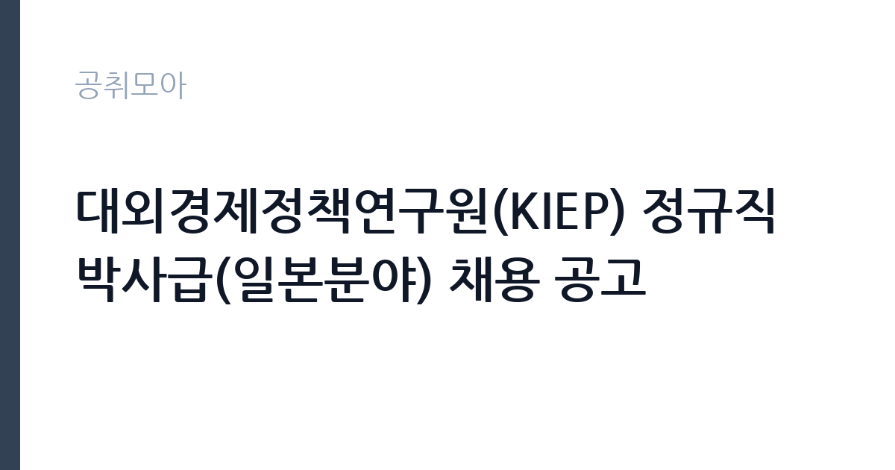

[공공기관] 대외경제정책연구원(KIEP) 정규직 박사급(일본분야) 채용 공고
대외경제정책연구원 · 세종 · 마감 2026-11-10 (D-16) · 출처 잡알리오

한눈에 보는 모집 조건
| 기관 | 대외경제정책연구원 |
|---|---|
| 공고명 | 대외경제정책연구원(KIEP) 정규직 박사급(일본분야) 채용 공고 |
| 고용형태 | 정규직 |
| 근무지 | 세종 |
| 게시일 | 2026-10-26 |
| 마감일 | 2026-11-10 (D-16) |
지원자격, 이렇게 읽으세요
- 공공기관 채용공시
- 세부 조건은 원문 공고문 확인
학력 요건은 박사로 명시되어 있고, 채용구분은 신입과 경력을 함께 받습니다. 우대 요건은 일본어 활용 능력 보유자와 일본 경제 관련 연구 경력 보유자입니다. 응시자격의 세부 내용은 알리오에 '우리 원 홈페이지 참고'로만 적혀 있어, 실제 요건은 KIEP 홈페이지의 채용공고 원문과 직무기술서에서 확인해야 합니다. 결격사유는 국가공무원법 제33조 각 호 해당자, 공민권 정지·박탈자, 병역 기피자, 연구원 징계로 면직된 지 2년이 지나지 않은 자, 최근 5년 내 다른 공공기관에서 부정 채용으로 취소된 자 등입니다. 접수는 KIEP 홈페이지가 아니라 Econ Job Market을 통해 온라인으로 이뤄진다는 점도 미리 알아두어야 합니다.
이 공고의 포인트
이 공고의 성격을 결정하는 것은 채용세미나입니다. 서류와 면접을 통과한 뒤에도 영어로 논문을 발표하고 평가받는 단계가 남아 있습니다. 국내 다른 공공기관에서는 보기 드문 절차로, 연구자로서의 발표 능력과 국제 학술 환경에서의 소통 능력을 직접 검증하겠다는 뜻입니다. 두 번째는 전형 기간입니다. 서류 발표가 11월 23일 이전, 면접이 12월 1일 이전, 채용세미나가 12월 15일 이전으로 예정되어 있어 접수 마감 후 한 달 이상 이어집니다. 세 번째는 분야의 희소성입니다. 일본 경제를 다루는 박사급 연구인력을 한 명 뽑는 자리라 지원 가능 인원 자체가 매우 좁습니다.
전형은 어떻게 진행되나
1차 서류전형은 응시원서와 논문 등 제출서류를 평가해 최종합격자 대비 6배수 이내를 선발하고, 11월 23일 이전에 결과를 발표할 예정입니다. 2차 면접전형은 연구 역량, 의사소통 능력, 조직 적합성을 평가해 3배수 이내를 뽑으며 12월 1일 이전에 시행됩니다. 3차 채용세미나는 전공분야 전문성, 조직 적합성, 의사소통 능력을 논문 발표로 평가하고 외국어인 영어로 진행되며, 여기서 최종합격자가 결정됩니다. 12월 15일 이전 시행 예정입니다. 합격자 발표는 홈페이지 공지와 개별 통보로 이뤄지고, 적격자가 없으면 채용하지 않을 수 있다는 조항이 붙어 있습니다.
원문에서 확인한 전형 방식
응시자격은 우리 원 홈페이지 참고(http://www.kiep.go.kr/)
이런 분께 추천해요
- 일본 경제나 일본 지역연구로 박사 학위를 취득한 분
- 일본어 자료를 원문으로 읽고 분석할 수 있는 분
- 영어로 논문 발표와 토론이 가능한 연구자
지원 전 체크리스트
- KIEP 홈페이지에서 채용공고 원문과 직무기술서를 확인했는가
- Econ Job Market 접수 절차와 필요 서류를 파악했는가
- 대표 논문과 연구실적 목록을 정리해 첨부했는가
- 채용세미나가 영어로 진행된다는 점을 감안해 발표 자료를 준비했는가
모집 일정과 제출 타이밍
10월 26일 공고, 11월 10일 접수 마감, 11월 23일 이전 서류 발표, 12월 1일 이전 면접, 12월 15일 이전 채용세미나 순으로 진행됩니다. 접수 마감부터 서류 발표까지 약 2주, 면접까지 추가로 일주일이 주어집니다. 논문 파일과 연구실적 증빙을 정리하는 데 시간이 걸리므로 접수 첫 주에 서류를 완성하는 편이 안전합니다. 일정이 변경되면 대상자에게 별도 안내된다고 공고에 적혀 있으니, 접수 후에도 이메일과 홈페이지 공지를 수시로 확인하십시오.
직무 이해하기: 공공기관
대외경제정책연구원은 1989년 설립된 국책 경제 연구기관으로, 대외경제정책과 국제통상, 지역연구를 수행합니다. 일본분야 연구자는 일본의 거시경제와 통상정책, 한일 경제관계, 일본 기업의 해외 진출 같은 주제를 다루게 됩니다. 정부 부처와 국회의 정책 수요에 대응해 보고서와 정책자료를 작성하고, 대외경제정책 학술지와 세계경제 포커스 같은 간행물에 연구 결과를 발표합니다. 국제 학술대회와 공동 연구 참여도 업무의 일부입니다. 연구 결과가 정부 정책에 반영되는 기관 특성상 근거의 정확성과 정책 시사점 도출 능력이 중요하게 평가됩니다.
자기소개서 작성 팁
박사급 연구직 지원서는 논문과 연구실적이 본체이고, 자기소개서는 그 실적이 KIEP의 연구 의제와 어떻게 맞닿는지 설명하는 자리입니다. 일본 경제 분야에서 다룬 주제를 한두 개로 압축하고, 그 주제가 한국의 대외경제정책에 어떤 함의를 갖는지 서술하십시오. 예를 들어 일본의 통상정책 변화나 엔화 변동이 한국 수출에 미치는 영향 같은 연결고리를 만들면 좋습니다. 지원동기는 KIEP가 발간한 보고서나 진행한 연구과제 가운데 본인이 관심을 둔 것을 구체적으로 언급하며 시작하면 준비도가 드러납니다. 일본어와 영어 능력은 수치나 자격으로 증명할 수 있는 부분을 함께 적으십시오.
면접 준비 포인트
면접은 연구 역량과 조직 적합성을 확인하는 방식으로 진행됩니다. 본인의 논문에서 가장 중요한 기여가 무엇인지, 연구 방법론을 어떻게 선택했는지, 정책 연구와 학술 연구의 차이를 어떻게 이해하는지 같은 질문이 나옵니다. 의사소통 능력 항목이 별도로 있으므로, 복잡한 연구 내용을 비전공자에게 설명하는 연습이 필요합니다. 채용세미나가 영어로 진행되므로 면접에서도 영어 질문이 섞일 가능성을 염두에 두십시오. 마지막으로 KIEP가 정부 정책 수요에 대응하는 기관이라는 점을 이해하고 있는지, 연구 일정과 행정 업무를 병행할 수 있는지를 확인하는 질문이 이어집니다.
급여·근무조건 읽는 법
KIEP 정규직 박사급의 보수는 연구직 임금 체계에 따라 책임연구위원, 연구위원 등 직급과 호봉으로 결정됩니다. 이번 공고는 연봉이나 월 급여 실액을 전혀 제시하지 않았고, 알리오 응시자격 항목도 홈페이지 참고로만 안내하고 있어 구체적인 금액은 원문 공고문과 처우 설명에서 확인해야 합니다. 확인되지 않은 수치를 추정해 쓰지 않는 것이 원칙이므로 이 글에서는 금액을 단정하지 않습니다. 확인 경로는 두 가지입니다. KIEP 홈페이지 채용공고의 처우 항목과, 알리오 경영공시의 직원 평균보수 항목입니다. 평균보수는 전체 직원 기준이므로 박사급 신규 채용자의 초임과는 차이가 있다는 점을 감안하십시오. 연구직은 성과에 따른 인센티브와 연구비 지원, 학술대회 참가 지원 같은 비금전 항목도 처우의 일부이므로 함께 확인하시기 바랍니다.
자주 묻는 질문
- 접수는 어디서 하나요?
KIEP 홈페이지가 아니라 Econ Job Market(econjobmarket.org)을 통한 온라인 접수입니다. 입사지원서도 해당 사이트에서 작성합니다. - 채용세미나는 어떤 방식으로 진행되나요?
논문을 발표하고 전공분야 전문성, 조직 적합성, 의사소통 능력을 평가받는 단계이며 외국어인 영어로 실시됩니다. 최종합격자는 이 단계에서 결정됩니다. - 일본어를 못하면 지원할 수 없나요?
일본어 활용 능력은 우대 요건으로 표시되어 있어 필수는 아닙니다. 다만 일본 경제 관련 연구 경력과 함께 우대되므로, 해당되면 증빙을 준비하는 것이 유리합니다.
함께 보면 좋은 공고
[공공기관] 2026년도 10월 블라인드 공개채용 계약직 (보건직, 행정직, 원무직) 모집 공고 — 마감 2026-11-09[공공기관] 2026년도 10월 블라인드 공개채용 국비계약직(작업치료사) 모집 공고 — 마감 2026-11-09[공공기관] 한국토지주택공사 인천지역본부 기간제근로자(매입행정역, 매입기술역, 공사원가검토역) 채용공고 — 마감 2026-11-09출처: 잡알리오 공개정보를 바탕으로 공취모아가 정리한 안내글입니다. 모집 조건·일정은 변경될 수 있으니 지원 전 반드시 원문 공고문을 확인하세요. 본 글은 정보 제공용이며 합격을 보장하지 않습니다.